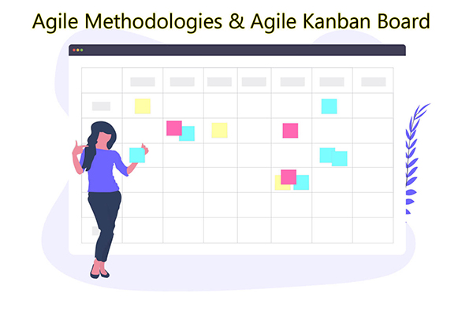

Overview of Agile Methodologies :
Is Agile just for Developers and Project Managers? No, it isn't. Agile is for anyone and everybody. There square measure staff from completely different organizations, completely different roles, completely different regions/countries, industries, etc. applying Agile in their comes.
- Does Agile equate to Scrum? Square measure them equal or identical thing? Technically no, essentially affirmative. Allow ME to elucidate this, beginning is one amongst varied agile methods, nonetheless beginning is that the most well-known and broadly speaking used of each agile system. Afterwards, once people square measure discussing "Dexterous" they're for the foremost half alluding to beginning. If I actually say then many folks even do not know their square measure different methodologies besides beginning.
- If you wish to be told additional regarding the opposite methodologies, but, is not there a similar to the PMI (Project Management Institute) for Agile? Or an additional "formal" thanks to get certified? No, not really. There square measure varied organizations giving "Agile Course & Certification" and that they energize from $500 to an enormous variety of bucks to point out you basically what you may notice during this course. Indeed, trust me. I even have been in varied Agile training's, with varied organizations in varied nations. They’ll get into additional profundity and take hours to point out you consumer stories, nonetheless primarily, the preparation you may expertise is that the equivalent.
An interpretation of a Companies that offers Agile course and Certification :
I would in any case favor one thing else "formal" just like the PMI. While not a doubt, there square measure several. Contingent upon the state you dwell in, you may discover varied alternatives. In Australia, Asia, Europe and also the U.S., a model is Rally. Here square measure two further instances of organizations giving Agile confirmations: the PMI itself and also the Scrum Alliance. The latter is widely known for its CSM Training (Certified ScrumMaster Training). Be that because it might, do not hesitate to Google or Microsoft's "Agile Certification" — you may discover varied alternatives.
What are the Ways to start doing Agile:
- Finish this course then begin associate Agile project. Like anything, practice, practice, practice. It is not onerous, and you may appreciate operating with Agile. Like something new it's going to seem to be modified toward the beginning and maybe outlandish, but once it slow you may get it suspend and start to feel additional associated additional like a knowledgeable. Next time you are during a space packed with individuals and somebody asks what a User story is or what the word Retrospective means that you may be able to justify that simply.
- Do you've have to stay to the book? E.g. does one want to satisfy with my team daily for fifteen minutes (the "Stand-Up")? No one will force you. That’s entirely up to you. Agile as associate approach/Methodologies urges you to try and do intrinsically, which is that the hypothesis. However, however regarding we tend to take this gift to the current} present reality. We tend to as a full notice that coaching changes from hypothesis. State as an example you're splintering away at ten ventures at the same time. Indeed, it occurs. within the event merely that you just} were meeting fifteen minutes daily for every enterprise that suggests you'd bear a hundred and fifty minutes of your day simply in stand-ups which might be altogether wasteful and useless. During this manner, you'll got to flip your everyday face a “weekly” standup for a few of those ten tasks. Indeed, I notice this is not ideal or what hypothesis directs. However, we'd like to regulate. We tend to should be pliant, the Agile manner. Another alternative is discussion to your Manager therefore you'll simply zero in on a couple/significant wants
- Is it true that Agile means that no coming up with and no documentation? No, nothing is a far from the reality. In Agile you intend and document all the time, however you retain it clean. You are doing it quickly and expeditiously. You do not compose 50-page records that nobody can examine. Within the event that you simply compose one thing you retain it short and basic. You perform coming up with in your Sprint coming up with conferences before starting every run and you archive perpetually by recording your consumer stories. You likewise archive your retrospectives and before starting your task you besides play out your due ingenuity (business set up, resourcing, etc. such as you would on any project).
- Is Agile just for IT projects? No, it isn't. Agile was born in IT trade, however it's followed and used across all industries. So, primarily individuals use Agile for sales, operations, procurance, selling comes and additional. Just about for all the world you'll think about. Individuals even use it for things like coming up with weddings. So, for his or her personal comes
- Is Agile is appropriate for any quite specific project? No, I am not language that. Agile to be honestly aforementioned isn't appropriate for each project. However it's for the overwhelming majority of comes.
How do you know if your project is an Agile project or not :
- Ask yourself inquiries to confirm whether or not the characteristics of the project match the Associate in Nursing Agile project. As an example, the client, will it need to be concerned within the Java application development method Associate in Nursing have input on the way? Is that the client willing to receive an initial product quickly and so increased versions over time? Is that the delivery time-frame a brief one, a year top? Or is it a lot of s a multiyear project, terribly advanced, terribly formal, government officials, etc.? And then on? You get the image. After you place the project to the check with this kind of query (and others you'll be able to assume of), you may be ready to answer yourself whether or not the project is appropriate for Agile or not. Trust your instinct, trust what you've got learned...
- What will MVP stand for? MVP is nothing however Associate in Nursing abbreviation for Minimum Viable Product. It implies keep it straightforward!!! Strive to not assemble a Ferrari if all you need could be a skateboard! an excellent deal of times people over confuse things in ventures and currently and so find yourself in uninterrupted patterns of finding the "awesome" arrangement, or building the "perfect" application or item; or they ought to check, fix, test, fix, test, etc. which generally finishes up within the endeavor superfluously increasing itself. Coordinated, urges you to fabricate the bottom you actually would like (without talks nature obviously) and later on accenting when your time. So, do not be hesitant to deliver one thing to the market or into the creation and later on up it. Organizations try this constantly! So, even settled organizations have it off, once they become Agile.
Agile Key Concepts :
Let’s check some key ideas and terms that area unit utilized in Agile. I even have mentioned all the main points as below with adequate rationalization and examples:
User Stories
- User stories area unit essentially product options, necessities, or tasks that add worth to the top client. By adding worth, I mean that whatever it's, it's one thing that that the top client would get, or they might notice very valuable and vital.
- If one thing doesn't add worth to the client, then it cannot be thought of as an Associate in the Nursing user story and will stay a task, sub-task, or demand. User stories area unit written in an exceedingly specific format that you'll be able to refer herein below. As an example, I need to be ready to use my Facebook login credentials to login to the eCommerce web site, so I ought not to produce a replacement account.
- As you'll be able to see the user story provides worth to the client since it helps in avoiding making a replacement user and passwords and therefore saving him time.
User Stories summaries :
- As a ->who) ->I want!!! So...
- + Story points + acceptance criteria. Ought to follow “INVEST”: freelance, Negotiable, Valuable, Estimable, Sized suitably, and Testable.
Story points
- The story purpose merely denotes the amount of complexness a user story has. So, you assign story points to every user story you produce. So, usually it's suggested to use a basic scale of 1, 3 and 5. One being low complexness, 3 being medium complexness 5 being high complexness.
- Now you must not waste your heap of your time estimating your story points. however, could story purpose are some things you'll be able to increase every user story as a team otherwise you can raise the person acting on the user story what level of complexness, they think about it. You’ll be able to use existing scale Fibonacci.
Story points Summary
- Story points live} a relative unit of measure to assess whether or not a user story is massive or little. You’ll be able to otherwise scale here for story points (e.g. 1, three or five; shirt sizes s, m, l, XL, xxl).
Product Backlog
- Product backlog sometimes contains all the user stories which will be the part of the project however after all in Agile which will be a dynamical list. Since you may begin with say fifty users’ stories and over time add fifty more.
- How several you add or take away can rely upon what you and your team outline throughout execution and you've got the pliability to outline that.
- An ordered list of everything that may be required within the product (also referred to as Master Story List).
Sprint Backlog
- Sprint backlog is simply taking a few of user stories from your product backlog and adding them to your sprint and committing the delivery of these user stories in this sprint.
- The set of Backlog things chosen to be delivered over an amount of your time.
Velocity
- Basically, rate of Associate in Nursing Agile project is that the variety of story points the team delivers over a sprint. And after all, you may see variations of that. Particularly at the start after your area unit simply learning that what percentage user stories, you're really ready to deliver as a team.
- So, at the terribly starting your area unit quite estimate or estimating what percentage story points you'll be able to deliver in an exceedingly sprint. however, when a few of sprints, you may be ready to average the amount of story points and so conclude as an example that on the average your team is in a position to deliver twenty story points per sprint which is your rate. You may systematically have the choice to work out your speed toward the end of your Sprint.
Swimlanes
Swimlanes is nothing however a visual illustration of stories (y axis) vs. standing on the Kanban/agile board: To Do; Doing; done (x pivot). Swimlanes let the cluster see improvement on individual stories, whereas that includes specific territories that require thought.
Minimum Viable Product (MVP)
Basically, MVP suggests that the blank minimum product you'll be able to deliver that meets the client’s expectations. Includes all prerequisites and excludes all nice to haves (no bells and whistles). MVP is absolutely powerful as a result of this may permit you to deliver quickly and ingeminate and build up and enhance your answer over time. This can be a key agile principle.
Release
A release because the name implies is after you move your user stories to production env. It comprised of many iterations or sprints.
Sprint
A Sprint could be an amount of your time during which the team can work on an outlined set of user stories. Generally, a sprint last period. However, some groups could have their sprint created for 3-4 weeks. You would like to outline what works best for you and your team giving your specific context and project dynamics.
Agile Smart Packs :
This agenda offers a summing up of things to think throughout the origin/disclosure amount of a Project. It’s planned as a manual for assist you with puzzling over your standing to begin your initial run.
This ought not to be viewed as a radical summing up – what's needed can dissent for every endeavor. Neither ought to it's viewed as a summing up of required things that ought to be finished before starting – activities can systematically begin with a degree of vulnerability, and also the underlying spotlight ought to air deciding the bottom arrangement of what's required for work to start.
Agile Principles :
- Agile is quite simply a technique or some way of doing things. It’s really a lot of sort of a culture. And like in any culture their area unit rituals or belongings you ought to do. In Agile, you've got four main rituals. Sprint designing, daily standups, sprint reviews or demo sessions and retrospectives. All area unit vital and everyone contribute to Associate in Nursing agile atmosphere and culture.
- In the sprint planning meeting, team gets along, and that they outline that user stories they're going to work on over successive a pair of weeks. So, during this session, you're reviewing as a Team, the scope of labor, priorities and what you suspect is realizable throughout successive sprint. The scrummage master facilitates this meeting; however, everybody participates. Throughout Sprint planning, team reviews the backlogs and decide the user stories they're going to work on over successive sprint.
- And generally, groups can place the chosen user stories in their Kanban Board below hoo-hah the sprint designing meeting, team gets along, and that they outline that user stories they're going to work on over successive a pair of weeks. So, during this session, you're reviewing as a Team, the scope of labor, priorities and what you suspect is realizable throughout successive sprint. The scrummage master facilitates this meeting; however, everybody participates. Throughout Sprint designing, team reviews the backlogs and decide the user stories they're going to work on over successive sprint. And generally, groups can place the chosen user stories in their Kanban Board TO-DO.
- Daily stand-ups as their name indicate area unit known as stand-ups as a result of the idea is that everybody ought to be standing up throughout the meeting. The idea behind is that by standing up, it helps make sure the meeting is brief, targeted and productive. Day by day stand-ups have a sense of familiarity and that they work sort of a spherical table. Everybody on the team says what they did the day before, what they're going to do these days and if they need any impediments, problems or something they have support with.
- Sprint review (demo/showcases) area unit conferences wherever team gets along to review what was delivered in last sprint. So, this can be scheduled right when a sprint finishes and through the meeting, the team goes over user stories that were delivered and also the ones that weren’t. To not the purpose of going over metallic element is guilty for not delivering, however, to be told and adapt a lot of for the team’s reflection. Sprint reviews area unit usually internal. With everyone within the cluster, nevertheless once in an exceedingly whereas folks incorporate the item proprietor to survey progress. Actually, this could be attainable severally.
- Retrospectives meetings specialize in lessons learnt and what you'll be able to do to boost. Or what your team ought to accommodate improve the delivery and execution. It’s a flash for reflection. You are doing this meeting perpetually right when the sprint and before successive sprint designing session. During retrospectives, you and your team ought to answer three basic queries. This I even have mention within the on top of section. During retrospectives, you and your team should answer 3 basic questions. This I have mention in the above section.
Misconception about Agile Methodologies :
- There could be an immense idea around Agile is that Agile is anti-documentation and documenting is meritless. Agile has ne'er aforementioned that we must always not document. On the contrary, with Agile you're documenting all the time. Consider user stories and retrospectives. What Agile needs you to know although is that you just mustn't pay hours and hours in documenting. Keep it straightforward and keep it clean.
- Another myth is that Agile is undisciplined and it needs loads of work on. However already as I actually have explained that this is often not true.
- And some folks say that Agile is anti-planning. However, in Agile, you're coming up with all the time and doubtless loads a lot of usually that you just would in the other project management certification. Before you begin any sprint, you are doing a brief and centered coming up with session.
- Another myth in agile is that “Agile solves everything”. Actually, the reality is that it doesn't solve everything. Agile could be a framework, a strategy and it will facilitate North American country with loads of things.
- But it’s not excellent and it’s not reaching to save the globe or solve all of your issues. You want to be creative and proactive to require care of your problems. You have got to act not simply to assume. You have got to figure with folks and along realize the most effective answer.
- The one amongst the most important misconceptions around Agile is that Agile is barely for IT comes. Actually, truth is that it's not just for IT comes. Agile was born in IT business however it's presently used across just about each business within the world and folks even use it for private comes like coming up with weddings then on.
Agile Project Kick-Off Checklist:
| Agile / Scrum Knowledge | Comments/Details |
|---|---|
| Requirement Overview Given for team | The requirement for this will rely upon the experience of the group. Could in like manner run a brief multi week run for the gathering to familiarize them with the Agile traditions (yet guarantee goal/object is clear). |
| Any required training | e.g. group interest in Agile preparing as well as instruments prefer Trello. In a perfect world, all colleagues ought to have experienced preparing. The "Crash Course on Agile: Project Management with applying Agiles; Agile Delivery" is suggested |
| Any required KT/Support trainings | This could also include joining other project’s scrum activities, or having more experienced representatives from other teams join yours |
| Team Work Practices | Comments/Details |
|---|---|
| Identified Team Roles (Scrum Master or Product Owner, etc.) | Affirm who is satisfying every job and distinguish anybody helping them or going about as an intermediary. For experienced groups, the scrum master job could be pivoted. |
| Ensuring Sprint timing | Sprints are normally fourteen days. Think about starting Sprints during the week rather than running them Mon – Fri yet work out what is best for you and your gathering. Each workplace is different. |
| Location and Daily stand-up time | Find a suitable time and location that works for everyone. |
| Location of Team members | Guarantee appropriate convenience for group (co-find if conceivable), in a perfect world with divider space for the scrum board, post-its, and so forth Decide in what manner you will oversee group correspondences and collaborations if everybody isn't co-found. |
| Morality of Team and Expectation | The Team ought to figure out what they anticipate from one another – for example working hours, interest in stand-ups, open and reasonable correspondence, shared obligation, perceiving disillusionment. |
| Ready/DONE story/task definition | Project specific definitions meaning of when a story is all set into a run, and when it is finished. Ensure everybody concurs on how this will be overseen. It might be as direct as everyone agreeing a client story is good to go into a run and everyone agreeing a client story is done after gathering discussion or testing results |
| Product/Project Vision | Comments/Details |
|---|---|
| Team Vision and Team Goals | Could be caught in various manners for instance: - Elevator pitch, In/Out of degree list and so forth |
| MVP identified | Distinguish the base that can be remembered for a first delivery, that will convey some customer/Client esteem and give input |
| Importance/Trade-offs/Priorities defined | Affirm what is generally significant for this venture - scope, quality, cost or timetable |
| Identification of dependencies / blockers and risk | What may cause the Project to come back up short? Distinguish rapidly, moderate or kill wherever conceivable. |
| Mapping of Priority/Key stakeholders | Determine who the key players are, and what their level of interest/involvement is |
| Solution, Tools & Technology | Comments/Details |
|---|---|
| High-level architectural solution identification | Guarantee any crucial decisions round the resolution design and advancements to be used area unit created and concurred on |
| Production deployment process | Do cycles and data ought to be stirred from previous frameworks to the improved one? Are migrations through varied conditions mean varied atmosphere required? |
| Dev/test/Prod environment identification | Are for the foremost half the necessary conditions recognized and accessible for improvement, testing, getting ready then forth? |
| Identification of Dev/Test tools | All python web development tools area unit obtainable and designed |
| Identification of Scrum tools | Are you utilizing associate degree actual physical Kanban board, advanced Kanban board (for example Trello) or a blend? Have these been arrangement/designed and will the cluster notice the way to utilize them? |
| Identification of Testing tools | Any test instruments are accessible and arranged (for example Jira Capture, unit testing frameworks) |
| Identification of communication tools across Teams | Any cluster coordinated effort apparatuses area unit arrangement (Phone/Video Conferencing, Skype, Slack, Trello, Teams, and so on) |
| Individual electronic accessories | All colleagues have important instrumentality (telephones, PCs, network access then forth) |
| Initial Backlog | Comments/Details |
|---|---|
| Identification of primary Features or Functions | Distinguish key highlights and elements of the item |
| Identifying backlogs that should be ready for dev phase | Use higher than to form associate degree underlying summation of stories for development. Organize and estimate story focuses for each user story |
| Planning the Agile properly | Agile plan/schedule Build up associate degree underlying unpleasant arrangement/plan for the work which will be refined because it advances |
| Socialisation | Comments/Details |
|---|---|
| Maintaining email communications for every phase starting from initial | Initial communications Send out any initial project communications to start participating stakeholders |
| Scheduling Project Kick-off meeting involving the stakeholders | Kick-off meeting to interact neutrals Hold a kick-off meeting with the additional intensive stakeholder cluster (Business and Management, Operations and Support teams etc) to mingle vision and vital high=level plans |
Template of a User Story :
- In theory, user stories area unit essentially product options, needs or tasks that add worth to the top client
- In practice, most Agile groups use user stories as tasks that mirror what they're attempting to accomplish, that in fact is directed to meeting a client want or demand
- In theory they ought to be written like this:
As a <user> (who) I need to… <what> therefore… <why>
Example: As a front-end developers I would like to confirm the app is responsive in order that it will work on completely different screen sizes
- But exploitation the format on top of to write down user stories, needs a lot of effort and area (which is restricted if you are exploitation Post-It notes). And it will get a touch repetitive and redundant, so…
- In practice, most Agile groups write user stories as short tasks that begin with a verb.
- <verb> and the task that’s being performed (written in a very short and concise manner)
Example: Ensure the app is responsive so that it can work on different screen sizes.
Examples of verbs to start a user story would be:
| Create | Analysis |
| Develop | Perform |
| Build | Test |
| Plan |
Velocity Chart Template :
- Velocity = Total Story Points Delivered over a Sprint. The instance below illustrates a basic example of a four Sprint Project. Being the Sprints during this case a pair of weeks long this can be a 2-month project.
- It has fifteen user stories in total. I've used the name "User Story #" within the essence of your time, however you'd in fact write the particular user story exploitation the format represented within the different tab
Agile: Retrospective
In the Agile retrospective meetings, the team members have to clearly mention about the following things after sprint end:
- What went well during this sprint?
- What didn’t go well during this sprint?
- What could we do differently so that we can improvise in coming sprints?
Conclusion:
Here I have explained the very basic fundamentals of Agile Methodologies and its impact and usage in project management.